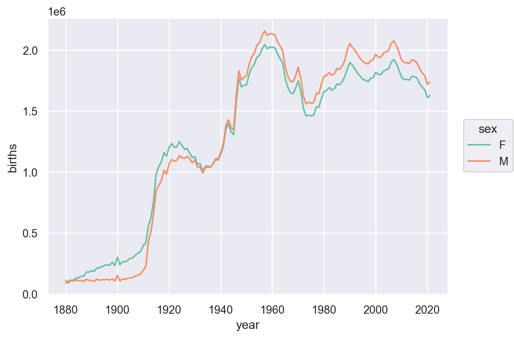
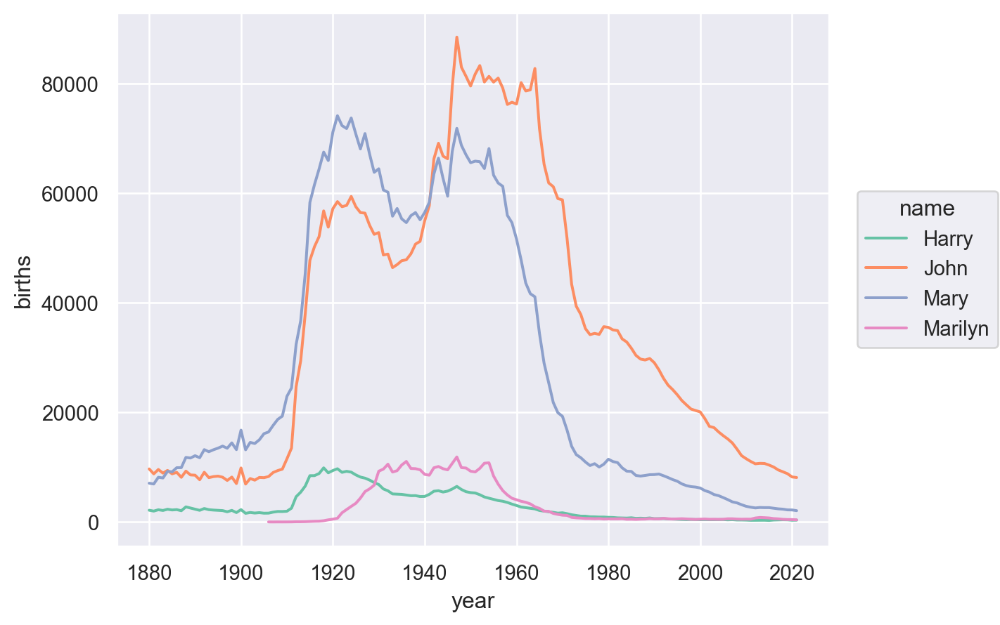
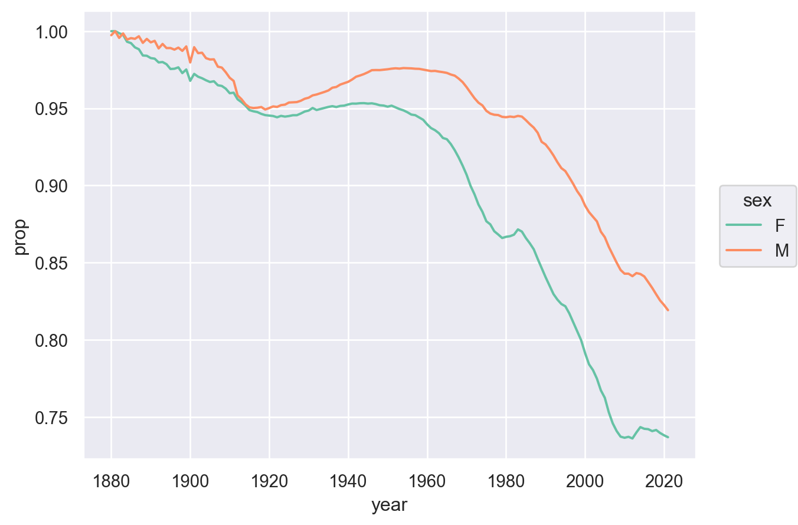
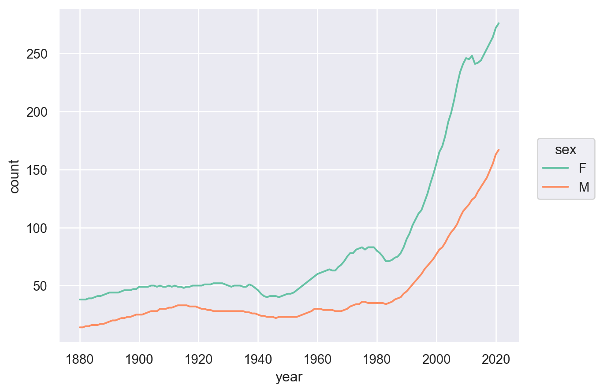
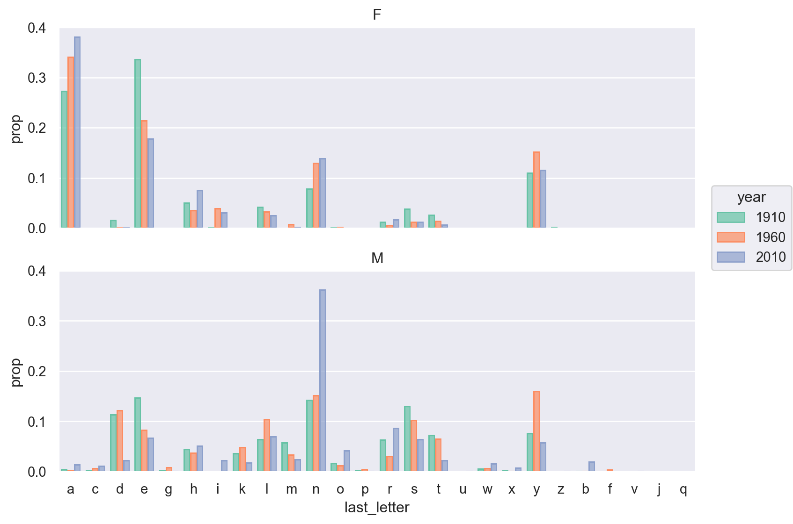
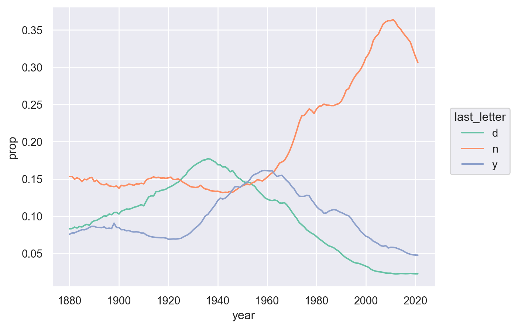
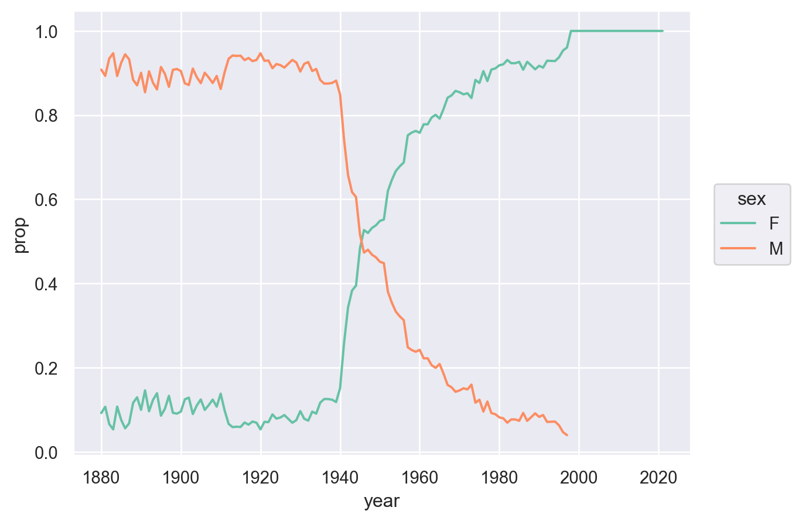

Load packages
# numerical calculation & data frames
import numpy as np
import pandas as pd
# visualization
import matplotlib.pyplot as plt
import seaborn as sns
import seaborn.objects as so
# statistics
import statsmodels.api as smPython for Data Analysis (3e) by Wes McKinney
# numerical calculation & data frames
import numpy as np
import pandas as pd
# visualization
import matplotlib.pyplot as plt
import seaborn as sns
import seaborn.objects as so
# statistics
import statsmodels.api as sm# pandas options
pd.options.mode.copy_on_write = True
pd.options.display.float_format = '{:.5f}'.format # pd.reset_option('display.float_format')
pd.options.display.max_rows = 8Source: McKinney’s: 13. Data Analysis Examples
다음 데이터는 미국의 출생아 이름에 대한 데이터입니다. 링크
names = pd.read_csv("data/babynames.csv")
names name sex births year
0 Mary F 7065 1880
1 Anna F 2604 1880
2 Emma F 2003 1880
3 Elizabeth F 1939 1880
... ... .. ... ...
2052777 Zyel M 5 2021
2052778 Zyian M 5 2021
2052779 Zylar M 5 2021
2052780 Zyn M 5 2021
[2052781 rows x 4 columns]groupby와 sum을 사용하세요.names_sex_year = names.groupby(["year", "sex"])["births"].sum().reset_index()names_sex_year year sex births
0 1880 F 90994
1 1880 M 110490
2 1881 F 91953
3 1881 M 100737
.. ... .. ...
280 2020 F 1609171
281 2020 M 1718248
282 2021 F 1627098
283 2021 M 1734277
[284 rows x 3 columns](
so.Plot(names_sex_year, x='year', y='births', color="sex")
.add(so.Line())
.scale(color="Set2")
)
names 데이터프레임에 각 이름별 출생아 수의 비율을 나타내는 컬럼 prop을 추가하세요.year, sex로 그룹핑을 한 후apply method를 이용하여 prop 컬럼을 추가해 보세요.def add_prop(group):
group = group.assign(prop = lambda x: x.births / x.births.sum())
return group
# 또는
def add_prop(group):
group["prop"] = group["births"] / group["births"].sum()
return group
names = names.groupby(["year", "sex"], group_keys=False).apply(add_prop)names name sex births year prop
0 Mary F 7065 1880 0.07764
1 Anna F 2604 1880 0.02862
2 Emma F 2003 1880 0.02201
3 Elizabeth F 1939 1880 0.02131
... ... .. ... ... ...
2052777 Zyel M 5 2021 0.00000
2052778 Zyian M 5 2021 0.00000
2052779 Zylar M 5 2021 0.00000
2052780 Zyn M 5 2021 0.00000
[2052781 rows x 5 columns]names에서 각 연도에서 남녀별 인기있는 이름 1000개씩을 추립니다.year, sex로 그룹핑을 한 후sort_values method를 적용하여 상위 1000개를 추출하는 함수 세워 apply로 적용해 보세요.def get_top1000(group):
return group.sort_values("births", ascending=False)[:1000]
top1000 = names.groupby(["year", "sex"], group_keys=False).apply(
get_top1000
) # group_keys=False: 그룹핑 한 변수들을 인덱스로 사용하지 않음top1000 name sex births year prop
0 Mary F 7065 1880 0.07764
1 Anna F 2604 1880 0.02862
2 Emma F 2003 1880 0.02201
3 Elizabeth F 1939 1880 0.02131
... ... .. ... ... ...
2039789 Harris M 217 2021 0.00013
2039793 Ronnie M 217 2021 0.00013
2039792 Merrick M 217 2021 0.00013
2039791 Mayson M 217 2021 0.00013
[283876 rows x 5 columns]top1000 데이터를 이용하여 분석합니다.total_birthJohn, Harry, Mary, Marilyn)에 대해서, 시간에 따른 이름의 변화를 살펴봅니다.total_births = top1000.groupby(["year", "name"])["births"].sum()total_birthsyear name
1880 Aaron 102
Abbie 71
Abby 6
Abe 50
...
2021 Zuri 1426
Zyair 324
Zyaire 828
Zyon 240
Name: births, Length: 269016, dtype: int64# total_births의 MultiIndex를 직접 이용해 subsetting을 하려면
subset = total_births.loc[:, ["John", "Harry", "Mary", "Marilyn"]] # .loc[첫번째 인덱스, 두번째 인덱스]
subset = subset.reset_index() # seaborn을 이용하기 위해서 DataFrame으로 변환
# 또는 DataFrame으로 먼저 변환한 후에 query를 이용
subset = total_births.reset_index().query(
'name in ["John", "Harry", "Mary", "Marilyn"]'
)
# visualization
(
so.Plot(subset, x='year', y='births', color='name')
.add(so.Line())
.scale(color="Set2")
)
top1000은 이미 각 년도별, 성별에 따른 인기있는 이름 1000개씩을 추려놓은 데이터프레임입니다.prop)의 합의 의미를 잘 생각해보면,top1000 name sex births year prop
0 Mary F 7065 1880 0.07764
1 Anna F 2604 1880 0.02862
2 Emma F 2003 1880 0.02201
3 Elizabeth F 1939 1880 0.02131
... ... .. ... ... ...
2039789 Harris M 217 2021 0.00013
2039793 Ronnie M 217 2021 0.00013
2039792 Merrick M 217 2021 0.00013
2039791 Mayson M 217 2021 0.00013
[283876 rows x 5 columns]table = top1000.groupby(["year", "sex"])["prop"].sum().reset_index()
(
so.Plot(table, x='year', y='prop', color="sex")
.add(so.Line())
.scale(color="Set2")
)
prop)의 누적합이 0.5가 되는 지점을 찾아보면,df = top1000.query('sex == "M" and year == 2010') # 2010년도에 태어난 남자아이들의 이름
prop_cumsum = df["prop"].sort_values(ascending=False).cumsum() # 인기순서로 비율의 누적합
prop_cumsum1678130 0.01155
1678131 0.02094
1678132 0.03000
1678133 0.03896
...
1679126 0.84249
1679127 0.84260
1679128 0.84270
1679129 0.84280
Name: prop, Length: 1000, dtype: float64# 누적 비율 50%까지의 이름의 개수
prop_cumsum[prop_cumsum <= 0.5].size + 1 # .size: Series의 열의 개수117이제 위 예를 이용하여, 각 연도별, 성별에 따른 인기 상위 50% 이름의 개수를 구해보세요.
year, sex로 그룹핑을 한 후apply로 적용해 보세요.diversity라는 이름의 데이터프레임으로 저장하면, 다음과 같고,def get_quantile_count(group, q=0.5):
prop_cumsum = group["prop"].sort_values(ascending=False).cumsum()
return prop_cumsum[prop_cumsum <= q].size + 1
diversity = top1000.groupby(["year", "sex"]).apply(get_quantile_count)
diversity = diversity.reset_index(name="count")diversity year sex count
0 1880 F 38
1 1880 M 14
2 1881 F 38
3 1881 M 14
.. ... .. ...
280 2020 F 272
281 2020 M 163
282 2021 F 276
283 2021 M 167
[284 rows x 3 columns](
so.Plot(diversity, x='year', y='count', color="sex")
.add(so.Line())
.scale(color="Set2")
)
“In 2007, baby name researcher Laura Wattenberg pointed out that the distribution of boy names by final letter has changed significantly over the last 100 years.” (p. 452)
이름의 마지막 철자는 이름의 느낌을 좌우해서인지 특히 자주 쓰이는 철자가 있으며, 그 트렌드도 시간에 따라 크게 변화하는 것 같습니다.
이제, 이름의 마지막 철자가 시간에 따라 어떻게 변화하는지 살펴봅니다.
last_letter라는 칼럼에 추가합니다.names데이터의 name 칼럼을 Series로 추출 후 .map Series method를 이용하여 적용합니다.# 함수를 이용해 이름의 마지막 글자를 추출
def get_last_letter(x):
return x[-1]
last_letters = names["name"].map(get_last_letter)
# 또는 간단히 lambda 함수를 이용
last_letters = names["name"].map(lambda x: x[-1])
# DataFrame에 새로운 열로 추가
names["last_letter"] = last_lettersnames name sex births year prop last_letter
0 Mary F 7065 1880 0.07764 y
1 Anna F 2604 1880 0.02862 a
2 Emma F 2003 1880 0.02201 a
3 Elizabeth F 1939 1880 0.02131 h
... ... .. ... ... ... ...
2052777 Zyel M 5 2021 0.00000 l
2052778 Zyian M 5 2021 0.00000 n
2052779 Zylar M 5 2021 0.00000 r
2052780 Zyn M 5 2021 0.00000 n
[2052781 rows x 6 columns]last_letter로 끝나는 이름을 가진 출생아 수를 구해보세요.table = names.groupby(["year", "sex", "last_letter"])["births"].sum().reset_index()table year sex last_letter births
0 1880 F a 31446
1 1880 F d 609
2 1880 F e 33381
3 1880 F g 7
... ... .. ... ...
6733 2021 M w 16292
6734 2021 M x 21014
6735 2021 M y 82625
6736 2021 M z 3519
[6737 rows x 4 columns]births의 비율을 다음과 같이 시각화 해보세요.last_letter로 철자가 끝나는 출생아 수의 비율을 구합니다.# Filtering
subtable = table.query('year in [1910, 1960, 2010]')
# transform을 이용해서 비율을 구하거나
subtable["total"] = subtable.groupby(["year", "sex"])["births"].transform("sum")
subtable = subtable.assign(prop = lambda x: x["births"] / x["total"])
# 앞서와 같이 함수를 이용해서 비율을 구할 수도 있음
def add_prop(group):
group = group.assign(prop = lambda x: x.births / x.births.sum())
return group
subtable = subtable.groupby(["year", "sex"], group_keys=False).apply(add_prop)
display(subtable)
# Visualization
(
so.Plot(subtable, x='last_letter', y='prop', color=subtable["year"].astype(str)) # year가 연속형 변수라 string으로 바꾸어 구별되는 색으로 표현되도록 함
.add(so.Bar(), so.Dodge())
.facet(row="sex")
.layout(size=(8, 6))
.scale(color="Set2")
) year sex last_letter births total prop
1260 1910 F a 108399 396505 0.27339
1261 1910 F c 5 396505 0.00001
1262 1910 F d 6751 396505 0.01703
1263 1910 F e 133601 396505 0.33695
... ... .. ... ... ... ...
6161 2010 M w 31027 1917416 0.01618
6162 2010 M x 16487 1917416 0.00860
6163 2010 M y 111600 1917416 0.05820
6164 2010 M z 3507 1917416 0.00183
[145 rows x 6 columns]
table 데이터를 이용해 모든 년도에 대해 last_letter의 비율을 구해보세요.# 앞서 정의한 `add_prop` 함수를 이용해서 비율을 구함
table = table.groupby(["year", "sex"], group_keys=False).apply(add_prop)
# visualization
(
so.Plot(
table.query('sex == "M" and last_letter in ["d", "n", "y"]'),
x="year",
y="prop",
color="last_letter",
)
.add(so.Line())
.scale(color="Set2")
)
남자 아이의 이름이였다가 여자 아이의 이름으로 점차 변하고 있는 경우가 있습니다. (혹은 반대)
# 유닉크한 이름을 Series로 추출
all_names = pd.Series(top1000["name"].unique()) # .unique(): numpy array로 반환됨
# `Lesl` 문자열을 포함하는 이름들 추출
lesley_like = all_names[all_names.str.contains("Lesl")] # Series의 method로 .str.contains()는 문자열 포함 여부를 판단lesley_like632 Leslie
2293 Lesley
4263 Leslee
4731 Lesli
6106 Lesly
dtype: objectlesley_like에 해당하는 이름들로 top1000 데이터를 필터링하여 filtered에 저장하세요.# query를 이용하거나
filtered = top1000.query('name in @lesley_like') # @: 외부 변수를 참조할 때 사용
# .isin()을 이용
filtered = top1000[top1000["name"].isin(lesley_like)]filtered name sex births year prop
654 Leslie F 8 1880 0.00009
1108 Leslie M 79 1880 0.00071
2522 Leslie F 11 1881 0.00012
3072 Leslie M 92 1881 0.00091
... ... .. ... ... ...
1926042 Leslie F 600 2018 0.00035
1958254 Leslie F 571 2019 0.00034
1990386 Leslie F 486 2020 0.00030
2021863 Leslie F 476 2021 0.00029
[415 rows x 5 columns]filtered 데이터에서 Leslie_like에 포함된 이름들이 각 연도별로, 남자로 쓰인 비율과 여자로 쓰인 비율을 구해보세요.filtered 데이터에서 연도별, 성별에 따른 출생아수의 합를 구한 후Leslie와 같은 이름들이 남자로 쓰인 비율과 여자로 쓰인 비율을 구할 수 있습니다.# 연도별, 성별에 따른 출생아수의 합
table = filtered.groupby(["year", "sex"])["births"].sum().reset_index()
# 긱 연도에 따른 비율
table = table.groupby("year", group_keys=False).apply(add_prop)
# Visualization
(
so.Plot(table, x='year', y='prop', color="sex")
.add(so.Line())
.scale(color="Set2")
)